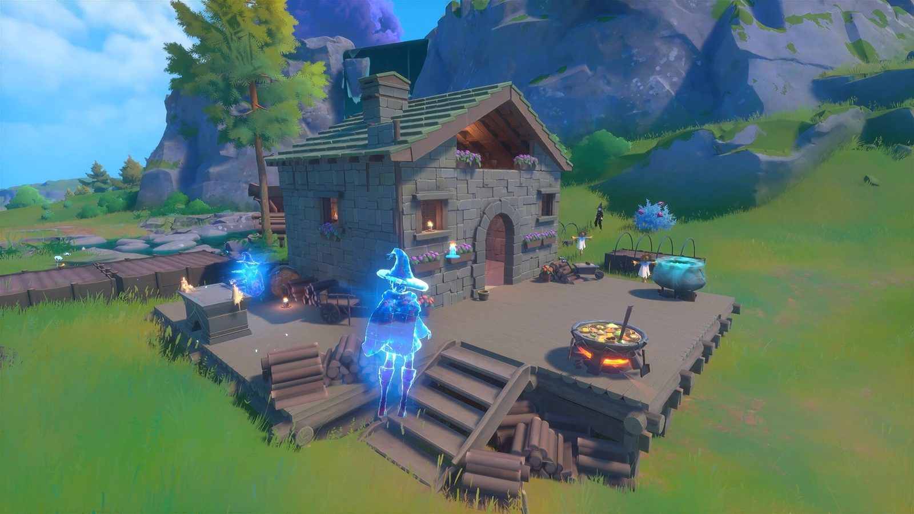
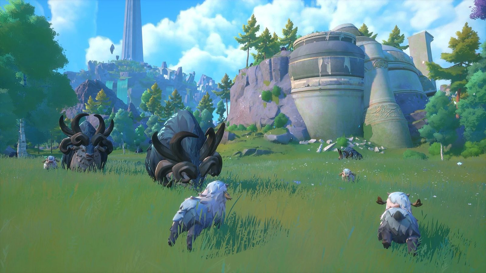

Senior Programmer
Envar Games
The game
Witchspire is a co-op open world survival crafting adventure where you and your coven must fight back against the corruption spreading across the land. Master your magic, build your Sanctuary, bond with familiars and explore this magical world.


What I did
- Used Unreal Engine 5 and AngelScript, building Witchspire from the start of pre-production through Early Access and on towards 1.0.
- Worked on multiple gameplay and core systems: abilities, enemy AI, networking, movement, inventory, crafting and UI, among others.
- The automation pipeline I built on top of Horde runs our development jobs, compiling changes and shipping them to Steam so we can get builds in front of playtesters quickly.
- Some of that work went back upstream, as fixes and extensions to Hazelight’s open-source AngelScript fork of Unreal Engine.